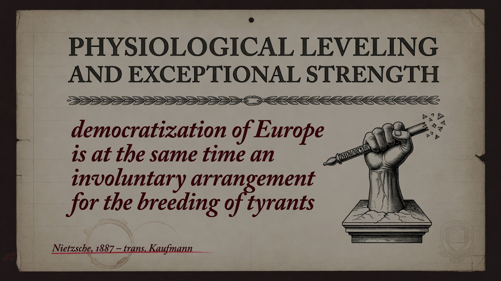

FRIEDRICH NIETZSCHE • 1886 • PART EIGHT
Section 248
Two Kinds of Genius: Begetting and Fructifying
Identifier: 248
Simple modern summary
Cultures play different roles—some create new things, others spread and fertilize what exists. These roles clash but also complement each other. Migration and identity debates often ignore these dynamics entirely.
EXTENSIVE SUMMARY (Faithful to Text)
“There are two kinds of genius: the kind which above all begets and wants to beget, and the kind which likes to be fructified and to give birth. And likewise there are among peoples of genius those upon whom has fallen the woman's problem of pregnancy and the secret task of forming, maturing, perfecting—the Greeks, for example, were a people of this kind, and so were the French—; and others who have to fructify and become the cause of new orders of life—like the Jews, the Romans and, to ask it in all modesty, the Germans?—peoples tormented and enraptured by unknown fevers and irresistibly driven outside themselves, enamored of and lusting after foreign races... These two kinds of genius seek one another, as man and woman do; but they also misunderstand one another—as man and woman do.”
Peoples are analogized to sexual roles in genius: the receptive, forming type (Greeks, French) and the fructifying, conquering, fever-driven type (Jews, Romans, Germans). They seek and misunderstand each other.
Key Insight: Cultural and historical roles are not interchangeable; they follow complementary but often clashing dynamics of creation.
BGE connection: Extends the sex antagonism of Part Seven into collective peoples and history. Prepares the discussion of what Europe owes the Jews in 250.
Modern companion insight: 2026 identity and migration debates often ignore these complementary dynamics. The free spirit observes which cultures currently play which role and whether misunderstanding is creative or destructive.
Peoples are analogized to sexual roles in genius: the receptive, forming type (Greeks, French) and the fructifying, conquering, fever-driven type (Jews, Romans, Germans). They seek and misunderstand each other.
Key Insight: Cultural and historical roles are not interchangeable; they follow complementary but often clashing dynamics of creation.
BGE connection: Extends the sex antagonism of Part Seven into collective peoples and history. Prepares the discussion of what Europe owes the Jews in 250.
Modern companion insight: 2026 identity and migration debates often ignore these complementary dynamics. The free spirit observes which cultures currently play which role and whether misunderstanding is creative or destructive.
Validation: Direct quote and analysis of the two kinds of genius among peoples in §248. ~260 words.
PRESENTATION SLIDES
Visual Slides
Dark Academia • Minimalist Keynote Style • 3 Slides
1. Title + Key Quote
SLIDE 1/3

Two kinds of genius among peoples: begetting/fructifying vs forming/giving birth. Greeks and French vs Jews, Romans, Germans.
2. Core Insight
SLIDE 2/3

The two types seek one another like man and woman—and misunderstand one another in the same way.
3. Implications
SLIDE 3/3

Observe which cultures currently fructify or form. Misunderstanding can be fertile or catastrophic; clarity matters.
Self-contained HTML • Tailwind CDN • Part Eight (Peoples and Fatherlands). Accurate modern companion to Kaufmann translation.